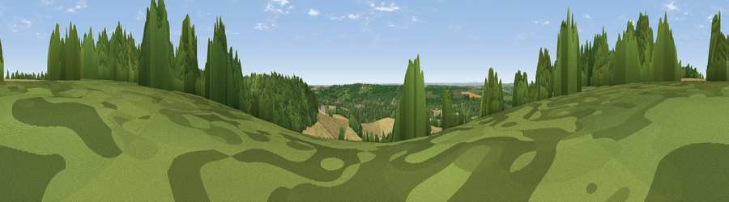

Viewpoint near Hollingbourne
#21072 in England · top 16% of its area beats it · near Hollingbourne · path 197 mWhere it is
The exact computed spot (TQ 86125 55025). Click the marker for map links.
Public access: the nearest public right of way is about 197 m away — the final stretch may cross private land. Computed from Natural England's CRoW access layer and OpenStreetMap rights of way — not the legal definitive map. Always verify locally.
The view, rendered

A 360° render of this exact spot computed from the terrain model, tree cover and land cover — summer colours, afternoon light, calibrated against photographs of famous viewpoints. Real trees, hedges and buildings will differ in detail.
The panorama
Grey silhouette: terrain skyline in each direction (720 bearings, Earth curvature and refraction included). Dashed green: skyline with trees (+15 m) and buildings (+8 m) as obstacles. Blue strip: how far the ground is visible on each bearing.
Where the view opens
Wedge length = distance to the farthest visible ground on that bearing (vegetation-aware). Rings at 10, 25 and 50 km.
What fills the view
46% cropland · 43% woodland · 9% grassland · 1% built-up
Angular shares of the visible panorama (visual magnitude), not map area. Landscape diversity 0.44 (0–1 Shannon).
Key numbers
More beautiful places nearby
The staircase of upgrades: each row has a higher view potential than everything closer. Driving times are estimates from straight-line distance, calibrated against real road routing — check an actual route before setting out.
| Place | Direction | Drive | Score |
|---|---|---|---|
| Viewpoint near Harrietsham | SE · 1 km | ~2 min | 55.4 |
| Viewpoint near Hollingbourne | NW · 2 km | ~6 min | 62.3 |
| Viewpoint near Thurnham | NW · 5 km | ~11 min | 63.4 |
| Viewpoint near Charing | ESE · 10 km | ~19 min | 68.6 |
| Viewpoint near Westwell | ESE · 14 km | ~25 min | 72.2 |
| Viewpoint near Lympne | SE · 31 km | ~48 min | 72.6 |
| Tolsford Hill | ESE · 34 km | ~52 min | 77.9 |
| Viewpoint near Capel-le-Ferne | ESE · 41 km | ~61 min | 80.2 |
51.26399, 0.66641 · source: screening · position refined by local search. Computed location — check access rights before visiting.